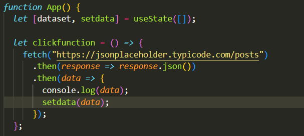
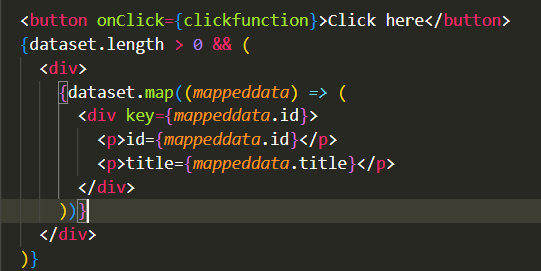

REACT-JS ASSIGMENT
↠ React (also known as React.js or ReactJS) is an open-source, front-end, JavaScript library for building user interfaces or UI components.
↠ It is maintained by Facebook and a community of individual developers and companies.
↠React can be used as a base in the development of single-page or mobile applications.
↠ It introduces a component-based architecture that encourages the encapsulation of UI components, which manage their own state, then compose them to make complex user interfaces. Since its introduction, React has adopted a declarative approach to programming with components, using a syntax extension called JSX..
↠React is only concerned with rendering data to the DOM (Document Object Model), and so creating React applications usually requires the use of additional libraries for state management and routing such as Redux and React Router, respectively.
↠ NPM (Node Package Manager) is not specific to React.js but is an essential tool in the React ecosystem and the broader JavaScript world.
↠ It is the default package manager for the JavaScript runtime environment Node.js
↠NPM is used to share and manage packages of code written in JavaScript, allowing developers to easily install, share, and manage dependencies (libraries and tools) in their projects.
↠ Installing React: This is typically done via the command line with commands like npm install react and npm install react-dom.
↠ Managing Project Dependencies: NPM allows developers to manage these dependencies efficiently through the package.json file, which keeps track of all the packages your project depends on.
↠ When you or someone else needs to set up the project, running npm install installs all these dependencies.
↠ Running Scripts:NPM can also be used to run scripts defined in the package.json file, which can include tasks like starting a development server, building the production version of a project, or running tests.
↠ Using Create React App: NPM is used to install Create React App and to initialize new React projects using it, with commands like npm install -g create-react-app and create-react-app my-app.
↠Node.js plays a significant role in the development ecosystem of React.js, even though React is a client-side JavaScript library and Node.js is primarily used for server-side applications.
↠ Development Environment:Node.js is often used to set up the development environment for React applications.
↠Tools like Create React App, Next.js, or Gatsby, which are used to bootstrap new React projects, rely on Node.j
↠ Package Management: Node.js comes with npm (Node Package Manager), which is used to manage libraries and dependencies in React projects.
↠ Build Tools: The build process for React applications (transpiling JSX to JavaScript, bundling assets, optimizing for production) is powered by Node.js-based tools.
↠ Server-Side Rendering (SSR):For applications that require server-side rendering, such as for SEO benefits or faster initial page loads, Node.js is a popular choice to run React on the server.
↠ Development Servers:During development, React developers use local development servers that are typically Node.js applications. These servers provide features like hot module reloading, which allows developers to see changes in real-time in the browser without needing a full page refresh.
↠ Development Servers:During development, React developers use local development servers that are typically Node.js applications. These servers provide features like hot module reloading, which allows developers to see changes in real-time in the browser without needing a full page refresh.
↠In React.js, CLI (Command Line Interface) commands are used to perform various tasks related to creating, developing, building, and deploying React applications.
↠The most common CLI tool used in React.js development is Create React App, which is an officially supported tool by the React team for bootstrapping new React projects with a predefined directory structure and build configuration.
Some basic command
↠In React.js, components are the building blocks of user interfaces.
↠ A component is a reusable, self-contained piece of code that encapsulates a specific functionality or piece of the user interface.
Functional Components:
↠ Functional components are JavaScript functions that accept props (short for properties) as input and return JSX (JavaScript XML) to describe what should be rendered on the screen.
Example
import React from 'react';
function Welcome(props) {
return <h1>Hello, {props.name}!</h1>
}
export default Welcome;
Class Components:
↠Class components are ES6 classes that extend the React.Component class. They are used when the component needs to have its own internal state or lifecycle methods.
Example
import React, { Component } from 'react';
class Welcome extends Component {
render() {
return <h1>ello, {this.props.name}!</h1>;
}
}
export default Welcome;
Header Component
↠A Header component typically contains the top section of the application, which might include the application's logo, navigation links, and any other information that should be accessible from anywhere within the application.
↠ It's a reusable component that can be included at the top of your application layout.
Content Component
↠A Content component, on the other hand, serves as a container for the main content that varies between pages or sections of the application
↠ It's where the specific content that users interact with is placed, such as a blog post, a form, a list of items, etc.
↠The Content component might change based on the current route or user interaction.
Installing Node.js/npm:
Windows:
↠ Visit the official Node.js website: https://nodejs.org/
↠ Download the Windows installer (.msi file) for the LTS version (recommended for most users).
↠ Run the downloaded installer and follow the installation wizard.
↠Once installed, open Command Prompt (CMD) or PowerShell and type node -v to verify that Node.js is installed. Similarly, type npm -v to check the version of npm.
Linux:
↠On Debian/Ubuntu-based systems, you can install Node.js and npm using apt:
↠On CentOS/RHEL-based systems, you can install Node.js and npm using yum:
↠Once installed, open a terminal and type node -v to verify that Node.js is installed. Similarly, type npm -v to check the version of npm.
Installing React.js:
↠Once you have Node.js and npm installed, you can create a new React.js project using Create React App. Follow these steps:
Create a New React Project:
↠Open a terminal or command prompt.
↠Use npm to install Create React App globally:
↠Once installed, navigate to the directory where you want to create your React project.
↠Run the following command to create a new React project (replace my-app with the name of your project):
Run Your React Application:
↠Navigate to the directory of your newly created React project:
↠Start the development server by running:
Access Your React Application:
↠Open a web browser and navigate to http://localhost:3000 to view your React application.
Checking npm Version:
↠To check the version of npm installed on your system, open a terminal or command prompt and simply type:
Check the package.json File
↠In your React project, open the package.json file. This file lists all the dependencies for your project, including React.
↠You'll see entries for "react" and possibly "react-dom" among others, with version numbers specified
Example
↳
"dependencies": {
"react": "^17.0.2",
"react-dom": "^17.0.2",
... }
↠Changing components in React.js typically involves modifying their state, props, or the component's structure (JSX) itself.
Changing State
↠State allows React components to create and manage internal data. When the state of a component changes, the component re-renders to reflect the new state.
Example
↳
import React, { useState } from 'react';
function Counter() {
const [count, setCount] = useState(0);
const incrementCount = () => {
setCount(count + 1); };
return (
<div>
<p>Count: {count}</p>
&button onClick={incrementCount}p>Incrementlt;//button>
<div>
); }
|  |  |